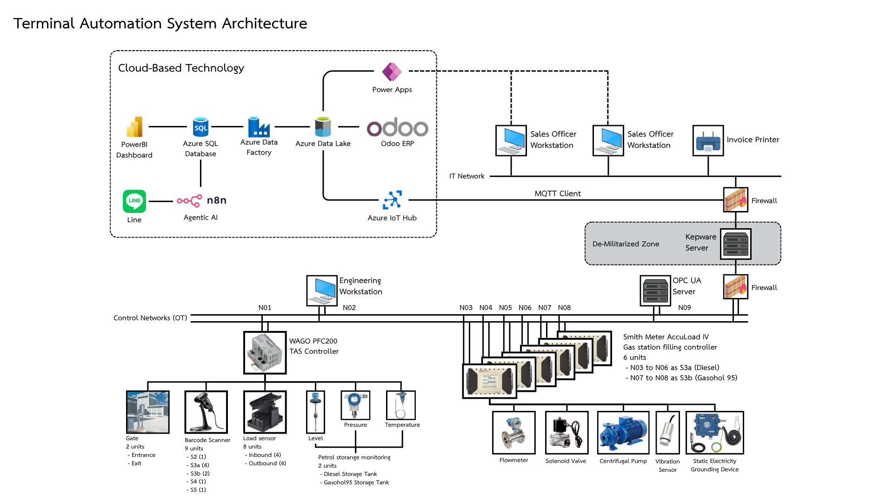
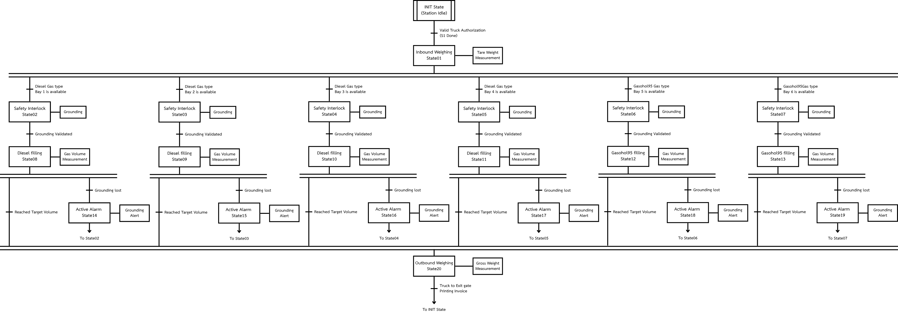
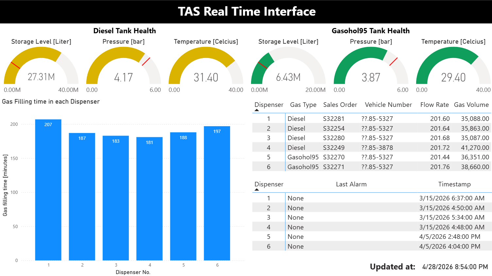

1. Executive Summary
This report documents the design and execution of the Terminal Automation System (TAS). The project successfully bridges Operational Technology (OT) and Information Technology (IT) to manage fuel distribution logistics. The implementation was executed across conceptual design, engineering execution, and intelligent data automation phases, incorporating a robust Cloud-native backend, MES-to-ERP pricing synchronization, and an advanced Digital Twin environment.
2. System Architecture & Data Pipeline Matrix
The TAS employs a robust 5-layer architecture, meticulously designed to ensure secure, efficient, and scalable management of fuel distribution logistics. This architecture strictly separates control networks from enterprise applications.

Figure 1: Illustrating data flow from Edge Devices through DMZ to Cloud & Enterprise Layers
- Layer 1 (The Edge & OT): Driven by a WAGO PFC200 Master PLC and 6 AccuLoad IV controllers, mapping telemetry from 8 load sensors, 9 barcode scanners, and multiple tank transmitters.
- Layer 2 & 3 (DMZ & Integration): Data routes from edge devices via OPC UA/MQTT through a secure DMZ containing a Kepware Server and an OPC UA Server, passing securely through firewalls into the Azure IoT Hub.
Cloud-Native Implementation (Layer 4 & 5)
The system's backbone is entirely Cloud-Based, utilizing the Microsoft Azure ecosystem to ensure high availability, disaster recovery, and scalable compute. Unstructured JSON telemetry from the Edge lands in a Bronze Data Lake. Serverless orchestration via Azure Data Factory acts as the ETL engine, cleaning and transforming this data before committing it to a highly structured Silver/Gold Azure SQL Data Warehouse. This cloud-first approach ensures that historical data storage and complex Power BI analytical queries do not bottleneck the physical field operations.
Digital Twin & Semantic Knowledge Base (Layer 6)
Beyond standard dashboards, the architecture incorporates an operational Digital Twin powered by Large Language Models (LLMs) and a Vector Database. Technical manuals, fault codes, and historical troubleshooting data are vectorized. This allows plant engineers to use semantic search to "chat" with the facility's documentation, instantly retrieving context for alarms or maintenance procedures, dramatically reducing Mean Time to Repair (MTTR).
3. Operational Flow & Step Logic (S1 to S5)
The physical terminal operations adhere to a highly structured, state-machine-driven sequence, ensuring safety, precision, and compliance throughout the fuel distribution process.

Figure 2: Functional Logic and Sequential Flow (IDEF0) for TAS Operations
- S1 (Entrance): Driver registers at the Sales Office. A Power App matches the vehicle to a sales order and generates a unique Barcode ID.
- S2 (Inbound Weighing): 4 load sensors transmit the 'tareWeight' (0 to 30,000 kg range) directly to the WAGO PLC.
- S3a & S3b (Filling Bays): The AccuLoad IV bypasses the WAGO PLC for direct telemetry transfer, enforcing a 200 liters/min flow rate. Pumping is hard-interlocked by a Grounding Device and Vibration Sensor.
- S4 (Outbound Weighing): Captures gross weight to compute net fuel volume delivered.
- S5 (Exit & ERP Update): Barcode is scanned, triggering the final transaction log and printing the official customer invoice.
4. Analytics, MES & Management Dashboards

Figure 3: Live Power BI Dashboard showing real-time tank health and active alarms
MES to ERP Synchronization & Dynamic Pricing
To ensure financial accuracy, the TAS tightly couples the Manufacturing Execution System (MES) at the edge with the enterprise Odoo ERP. When a truck departs, the n8n Agentic AI triggers a bidirectional API call. The actual net volume (Gross Weight minus Tare Weight) captured by the PLC is pushed to Odoo. The ERP then automatically calculates the exact invoice by cross-referencing the physical volume against the Target Sell Price versus the Actual Sell Price, ensuring that any variations in product density or temperature compensation are accounted for before the customer is billed.
Average Throughput
~200 L/min
Targeted flow rate during filling.
Total Revenue
4.43 bn THB
YTD financial revenue generated.
Break-even Volume
3.73 M Liters
Volume to cover fixed/variable costs.
Margin of Safety
97.28%
Current buffer above break-even.
5. Project Team & Technical Contributions
The successful execution of the TAS required highly specialized cross-functional engineering. Below is the breakdown of responsibilities and technical deliverables by role according to our organizational structure:
Phuripat Nilrueang
Project Manager & Automation Engineer (OT)
- OT Architecture & Logic: Designed the overarching physical process models (IDEF0) and programmed the state-machine operations for the WAGO PFC200 master PLC.
- Edge Hardware Integration: Configured the 6 Smith Meter AccuLoad IV controllers for decentralized telemetry and mapped the full I/O database (48 field instruments).
- Safety Systems: Engineered the critical safety interlock logic, ensuring the 200 L/min dispensing pumps only activate upon positive validation from static grounding and vibration sensors.
Phop Keseesang
Data / Cloud Engineer (IT)
- Cloud-Native Architecture: Architected and deployed the 5-Layer Azure Cloud data pipeline, ensuring a scalable, serverless backend using Azure Data Factory and Data Lake.
- Secure Middleware (DMZ): Established the De-Militarized Zone, configuring the Kepware and OPC UA Servers to securely route edge telemetry through firewalls into the Azure IoT Hub.
- ETL & Data Warehousing: Built automated data pipelines to transform raw JSON telemetry into structured tables within the Silver/Gold Azure SQL Data Warehouse.
Pharun Ngamcharoen
Data / Cloud Engineer (IT)
- Frontend Application Development: Designed and developed the custom Power App for Sales Officers to effectively manage frontline TAS operations.
- Data Entry & Order Flow: Configured the digital operational forms for sales order matching, manual data entry, and unique barcode generation at the entrance gate.
- Cloud Integration: Connected the frontend Power App interfaces to the Azure cloud backend to ensure seamless real-time data flow from the sales office to the warehouse.
Wiwan Wijitworawong
Data Scientist (Analytics & Costing)
- Financial Costing Models: Implemented Activity-Based Costing (ABC) across stations S1-S4 to ensure highly accurate overhead allocation and job costing for the facility.
- Managerial Dashboards: Built analytical models calculating the Margin of Safety (97.28%) and overall Contribution Margins to track business profitability.
- Predictive Financial Analytics: Designed the 'Scenario A' ML Sensitivity Heatmap to visualize and predict financial risks and cost implications during system downtime scenarios.
Praravee Treepattarachayakorn
Data Scientist (ERP Integration)
- Enterprise System Management: Configured and deployed the Odoo ERP system to act as the central hub for managing core business processes and inventory transactions.
- MES/ERP Pricing Engine: Engineered the data logic linking physical Manufacturing Execution System (MES) metrics to Odoo for real-time transaction processing.
- Dynamic Validation: Synchronized Target vs. Actual Sell Prices within the ERP to ensure highly accurate customer billing based directly on physical field volume telemetry.
Thepparux Ruxpakawong
AI Engineer
- Digital Twin Architecture: Designed the Vector Database integration, embedding technical manuals to create a semantic search engine allowing engineers to query fault codes using natural language.
- Agentic Automation: Implemented the n8n Agentic AI platform to act as the intelligent bridge, automating data transfers between the Azure SQL warehouse and Odoo ERP.
- Real-Time Alerting: Configured webhooks and messaging APIs to push critical system alerts directly to operators via the LINE application, while conducting rigorous Prompt Testing.
6. Engineering Documentation
For detailed technical verification, please refer to the original system architecture and data models below: